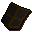
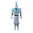

Black kiteshield

| Config name | black_kiteshield |
| Item id | 1195 |
| Value | 1632 gp |
| Weight | 12lb |
| Members | No |
| Tradeable | Yes |
| Stackable | No |
| Equip slot | lefthand |
| Options | Wear |
| Category | armour_shield |
| Defined in | scripts/skill_combat/configs/melee/kiteshields.obj |
| Equipment stats | Magic att -8, Range att -2, Stab def 17, Slash def 19, Crush def 18, Magic def -1, Range def 18 |
Black kiteshield
A large metal shield.
Dropped by
| NPC | Level | Quantity | Rarity | Via | Notes |
|---|---|---|---|---|---|
 Ice giant | 49 | 1 | 1/32 (3.12%) | ||
| Ice giant | 49 | 1 | 1/128 (0.78%) | free-to-play only |
Referenced in scripts
scripts/drop tables/scripts/ice_giant.rs2scripts/levelrequire/scripts/tier10.rs2